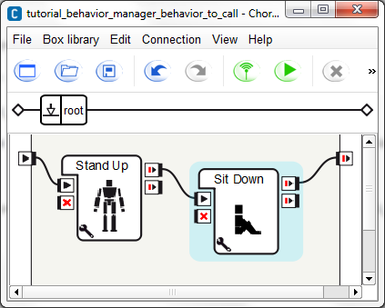
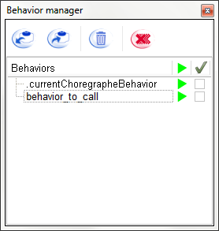

Enrich NAO’s behavior list¶
This tutorial will show you how to enrich your robot’s possibilities by uploaded behaviors.
In this section you will learn how to:
- Add a Behavior to your robot using the Behavior manager, and then
- Call it inside a script box.
Add a behavior to your NAO using the Behavior manager¶
Let’s create a simple Behavior that we will add to the robot:
| Step | Action | Further help |
|---|---|---|
| Drag and drop the Motion > Stand Up and the Motion > Sit Down boxes into your Flow diagram. | ||
Link those two boxes to make it look like this:  |
||
| Save the Behavior. | ||
| Display the Behavior manager. | How to display/hide panels | |
Click on the  Add current behavior button
to add the Behavior on your robot. Add current behavior button
to add the Behavior on your robot. |
||
| Set the name of the Behavior. | ||
Click on Ok. You can see that the behavior is added in the list of behaviors that are on the robot. You have added your first behavior on your robot. |
||
In the Behavior list of the Behavior manager, click the Play button to start the Behavior. Your robot executes the behavior. |
Call a behavior from a box script¶
| Step | Action | Further help |
|---|---|---|
| Create a new project. | ||
| In the Flow diagram, create a Script box. | How to create a Script box | |
Double click the box to display the Script editor. You can see that the structure of the code was automatically generated. |
||
| In the onLoad method, creates a proxy to the ALBehaviorManager module. | ||
| In the onStart method, call the method runBehavior with the name of the Behavior previously added to the Behavior manager. | ||
In the onUnload method, call the method stopBehavior with the name of the Behavior previously added to the Behavior manager. The code of the box should look like that: class MyClass(GeneratedClass):
def __init__(self):
GeneratedClass.__init__(self)
def onLoad(self):
self.behaviorManagerProxy = ALProxy("ALBehaviorManager")
def onUnload(self):
self.behaviorManagerProxy.stopBehavior("Put here the name of the behavior")
pass
def onInput_onStart(self):
self.behaviorManagerProxy.runBehavior("Put here the name of the behavior")
pass
def onInput_onStop(self):
self.onUnload()
#~ it is recommanded to call onUnload of this box in a onStop method,
as the code written in onUnload is used to stop the box as well
pass
|
||
| Link the input of the box to the beginning of the root behavior. | ||
Start the behavior using the Your robot executes the behavior called in the script. Note If you look at the Behavior manager during the execution, you can see that the Behavior called is running and that you can stop it by clicking on the stop button. |
 Play button.
Play button.